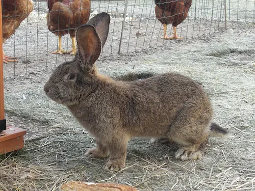
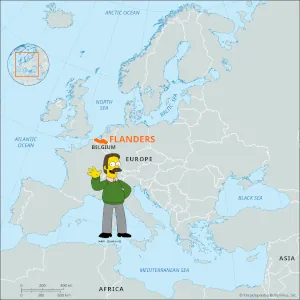
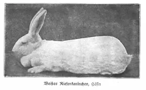

Highlights
-One of the largest breeds of domestic rabbits
-Originated in Flanders in the 16th century
-Known for their large size, gentle temperament, and long ears
-Can weigh up to 22 pounds and grow up to 4 feet long
-Popular as pets and show animals
More Information
Flemish Giant rabbits are a breed of domestic rabbit that originated in Flanders, which is now part of Belgium, in the 16th century.

The earliest record of the Flemish Giant was in the year 1860. The exact origins are so old that some facts are disputed, but the ancestors were said to be the Steenkonjin ("Stone Rabbit") and the now-extinct European Patagonian rabbit.

They were originally bred for their meat and fur due to their massive size, but today they are primarily kept as pets and show animals. Flemish Giants are known for their large size, gentle temperament, and long ears. They can weigh up to 22 pounds and grow up to 4 feet long. Despite their size, they are generally docile and friendly, this makes them a popular choice for pets or even to teach children about animal care.